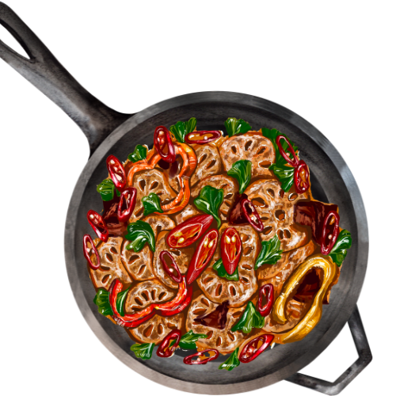
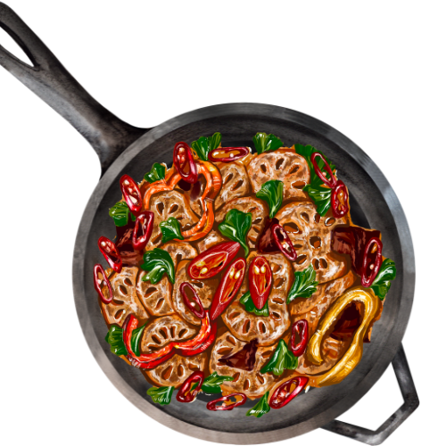

a playground for pint-sized culinary cuties on the hunt for tasty inspiration!
WELCOME!
Hey there, little chef-in-training! Ready to dive headfirst into a world of flavors? Explore our gallery for fun and simple recipes, from mouthwatering desserts to zesty drinks! Our step-by-step guides make it easy for chefs of all levels to create culinary masterpieces. So lets get our aprons on and get cooking!

TASTIEST BITES OF THE WEEK
Chocolate Milkshake
A delightful milkshake to brighten up a sunny day.
 

NOT SURE WHAT TO MAKE?
Feeling indecisive about what to whip up? Check this quirky feature and let fate pick a random recipe for your culinary adventure!
HAVE FUN, LITTLE CHEFS!
© 2025 Incy Wincy Eats. All Rights Reserved. All recipes require adult supervision.